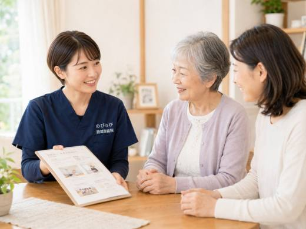
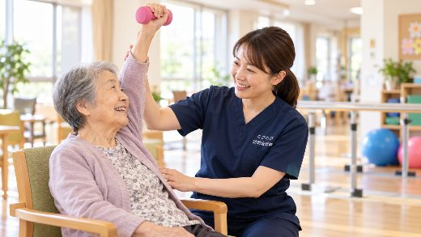

退院して自宅の生活が始まると、ほっとするのと同時に、このまま体を保てるだろうか、通院のリハビリだけで足りるのか、という不安が出てきます。手足のこわばり、動かしにくさ、しびれや痛み。脳梗塞・脳出血の後遺症は、日々のケアの積み重ねで、その後の暮らしやすさが変わっていきます。訪問鍼灸マッサージができること、正直にできないこと、気をつけたいサインと費用まで、施術の現場からお伝えします。
先に要点を。脳梗塞・脳出血の後遺症に対して、鍼灸はこわばりや痛みの緩和、関節が動く範囲の維持を助ける補助のケアです。失われた機能を元通りにするものではなく、あらわれ方には個人差があります。治療とリハビリは医療機関が主で、鍼灸は併用の立場。手足の急な脱力、ろれつが回らない、突然の激しい頭痛などは再発が疑われるため、まず救急・医療機関へ。医師の同意にもとづく医療保険を使い、自己負担は1割の方で1回およそ395円。訪問リハビリとは保険の枠が別なので、回数を減らさず足せます。
まず、これだけは急いでほしいというサインがあります
脳梗塞や脳出血は、一度落ち着いたあとでも再発することがあります。急に手足の力が抜けた、片側がしびれて動かない、ろれつが回らずうまく話せない、これまで経験したことのない強い頭痛がある。こうしたときは、鍼やマッサージでようすを見ようとしないでください。施術より先に、すぐ受診してください。迷ったら救急車をためらわない。ほかのどんな話よりも先に、ここははっきりお伝えしておきます。
動かさないと、体はどんどん固まっていきます
片麻痺が残ると、麻痺した側の手足は思うように動きません。やっかいなのは、こわばりが悪循環を生むことです。動かしづらいから動かさなくなり、動かさないからいっそう固まる。筋肉がつっぱって縮んだ状態は痙縮と呼ばれ、肘や手首、膝が曲がったまま伸びにくくなります。放っておくと関節の動く範囲がせまくなり、着替えやおむつ交換のときに痛みが出たり、手のひらが握り込んで開かなくなったりします。
訪問でうかがってできるのは、この固まった筋肉をゆるめて、血のめぐりを促すことです。つっぱりが少しやわらげば、関節を動かせる幅を保ちやすくなります。動かない側にたまりやすいむくみや、肩の重だるい痛みにも手を入れていきます。失われた神経の働きそのものを元に戻すことはできませんが、そこから二次的に進んでいく固さを食い止める。そういう役割です。
治すのは医療、私たちは支える側です
はっきりさせておきたいことがあります。脳卒中そのものの治療も、再発を防ぐ薬の管理も、主役は医師です。鍼灸マッサージがそこに取って代わることはありません。私たちが担うのは、退院して自宅に戻ったあとの暮らしのなかで、こわばりや痛みを少しでも軽くして、動ける状態を保つお手伝いです。効果を大げさに約束するようなことはしません。
話しにくさや飲み込みにくさが残る方もいます。この部分は言語聴覚士のリハビリが中心になりますが、首や肩、口まわりの緊張をゆるめておくことが、その土台として役立つ場面もあります。医療のリハビリと歩調を合わせながら、生活そのものを底上げしていく位置づけと考えてください。
退院してからの「生活期」に、出番があります
脳卒中のリハビリは、時期によって役割が変わります。倒れた直後の急性期は病院での治療、そのあとの回復期はリハビリ病院での集中的な訓練が中心です。訪問鍼灸マッサージが力になれるのは、自宅に戻ってからの生活期、毎日の暮らしのなかで、体が固まらないように手を入れ続ける時期です。
うかがうたびに、麻痺した側の状態は少しずつ変わります。前回よりつっぱりが強くないか、関節はどこまで動くか、皮膚の温度に左右差が出ていないか。そうした変化を確かめながら、その日の体に合わせて施術します。手技だけでなく、関節を動かす機能訓練も組み合わせますが、これは鍼灸に加えて行うもので、追加料金はかかりません。
訪問リハビリと一緒に受けられます
すでに介護保険で訪問リハビリを利用している方でも、鍼灸マッサージは併用できます。こちらは医師の同意にもとづく医療保険（療養費）で行うので、介護保険の限度額とは別の枠です。要介護認定は必要なく、いるのは医師の同意書だけ。限度額を気にしてリハビリの回数を削る、といったことをせずに済みます。
ひとつだけ注意点があります。同じ部位について、医療保険のリハビリと鍼灸を同じ月に同時に算定することはできません。どこにどう組み合わせるかは、ケアマネジャーや主治医と相談しながら決めていくのがよいと思います。制度の違いは医療保険と介護保険の記事でもう少しくわしく説明しています。
外に出られなくても、毎週続けられます
生活期のケアは、劇的に良くするというより、止めないことに意味があります。歩くのがむずかしい、外出できないという状態でも、国家資格を持った施術者が自宅にうかがうので、通院の負担なく続けられます。出張費を別にいただくこともありません。
費用は、1回の施術で総額3,950円。医療保険の1割負担なら、1回およそ395円です。週2回のペースで続けても、ひと月でおよそ3,160円（1割）に収まります。対象になる方の条件は対象者の記事、料金の内訳は料金の記事にまとめてあります。
訪問先でうかがったお話
足を前に出す運動を続けている方から、「前より強なってる」というお話がありました。力が戻ってきたことをお伝えすると「あなたのおかげです」と言っていただきましたが、実際にはご本人が毎日続けてこられたことや、病院でのリハビリ、ご家族・施設の支えが重なった結果です。施術のあとに肩甲骨のまわりを触りながら「楽になった」と話される方もいます。麻痺の回復に向けた治療とリハビリは病院と主治医が土台で、訪問の鍼灸はその横で、こわばりが進まないように支える役割です。
よくある質問
脳梗塞の後遺症でも保険で受けられますか？
後遺症にともなう肩や腰の痛み、手足のこわばりやしびれについて医師が施術の必要を認め、通院がむずかしければ、医師の同意にもとづく医療保険の対象になる場合があります。まずは今の状態をお聞かせください。同意書の手続きはこちらで引き受けます。
退院したばかりですが、いつから始められますか？
体の状態が落ち着いていれば、退院後の早い時期から始められることが多いです。まず状態をうかがい、無理のない形をご提案します。生活期に入ってからでも、始めるのに遅すぎるということはありません。
訪問リハビリも受けていますが、鍼灸も足せますか？
足せます。訪問鍼灸マッサージは医療保険、訪問リハビリは介護保険と枠が別なので、限度額とは別に併用できることが多いです。今の利用状況を教えていただければ、回数を減らさずに済む組み合わせを一緒に整理します。
片麻痺のこわばりは鍼灸で和らぎますか？
固くつっぱった筋肉をゆるめ、血のめぐりを促し、関節が動く範囲を保つ手伝いはできます。動かしやすさが少しずつ戻る方もいますが、あらわれ方には個人差があります。麻痺そのものを元通りにするものではなく、日々の状態を支えるケアとお考えください。
麻痺は鍼灸で治りますか？
麻痺そのものを元どおりにするものではありません。できるのは、固くなった筋肉を和らげ、こわばりや二次的な痛みを防ぎ、動かしやすさを保つ土台づくりを支えることです。治療とリハビリは医療機関が主で、鍼灸はそれと並行する補助の立場です。
再発が心配です。急に手足が動かなくなったらどうすれば？
手足の急な脱力、ろれつが回らない、顔の片側が下がる、突然の激しい頭痛などは再発が疑われます。鍼灸でようすを見ず、迷わず救急車を呼ぶか、かかりつけの病院へ連絡してください。再発予防の管理は主治医の領域で、施術者が判断するものではありません。
月にどれくらいかかりますか？
1割の方の目安は、週1回でひと月およそ1,580円、週2回で約3,160円、週3回で約4,740円。2割の方はちょうど倍が目安です。別途の出張費や交通費はかからず、エリア内は同額。お支払いは月ごとにまとめてで、明細をお渡しします。
家族が介助のコツを教えてもらえますか？
はい。こわばりがゆるんだタイミングを見計らった声かけや、負担の少ない移乗・着替えの仕方など、その方の状態に合った介助のコツをお伝えできます。介助するご家族自身の肩や腰のケアについても、条件が整えば同じように保険で受けられます。

池田市で脳梗塞の後遺症のケアをお探しの方へ｜訪問鍼灸マッサージという選択肢
続きを読む
尼崎市で脳梗塞の後遺症のケアをお探しの方へ｜自宅で続ける訪問鍼灸
続きを読む
箕面市で脳梗塞の後遺症のケアをお探しの方へ｜訪問鍼灸マッサージという選択肢
続きを読む
都島区（大阪市）で脳梗塞の後遺症のケアをお探しの方へ｜訪問鍼灸マッサージ
続きを読む
脳梗塞・脳出血のあとの手足のつっぱり・こわばり（痙縮）と在宅の鍼灸ケア｜訪問鍼灸マッサージ
続きを読む